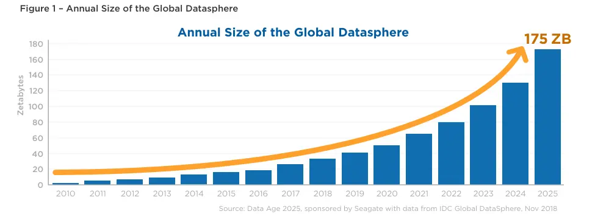
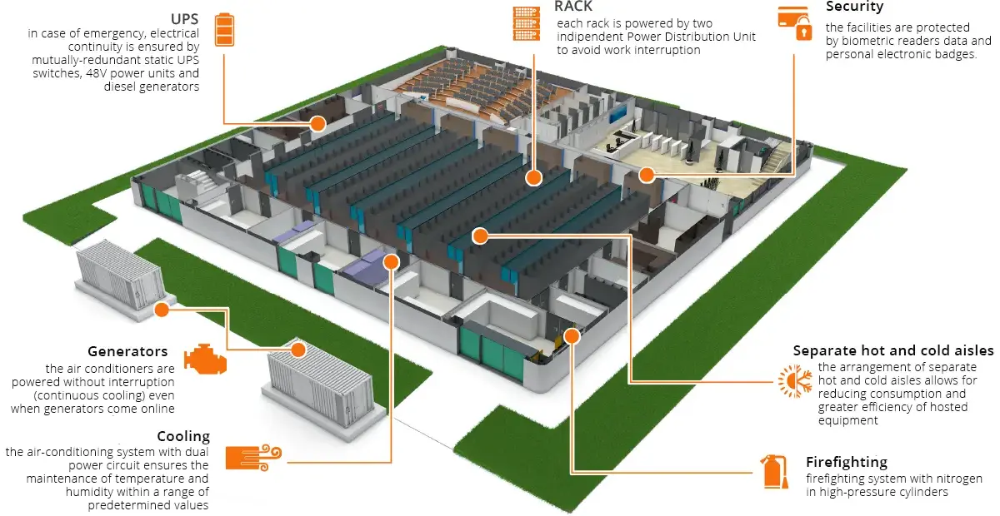
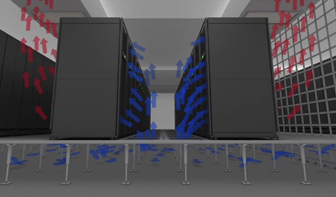
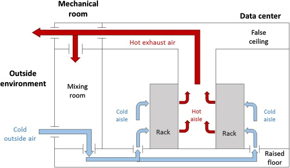
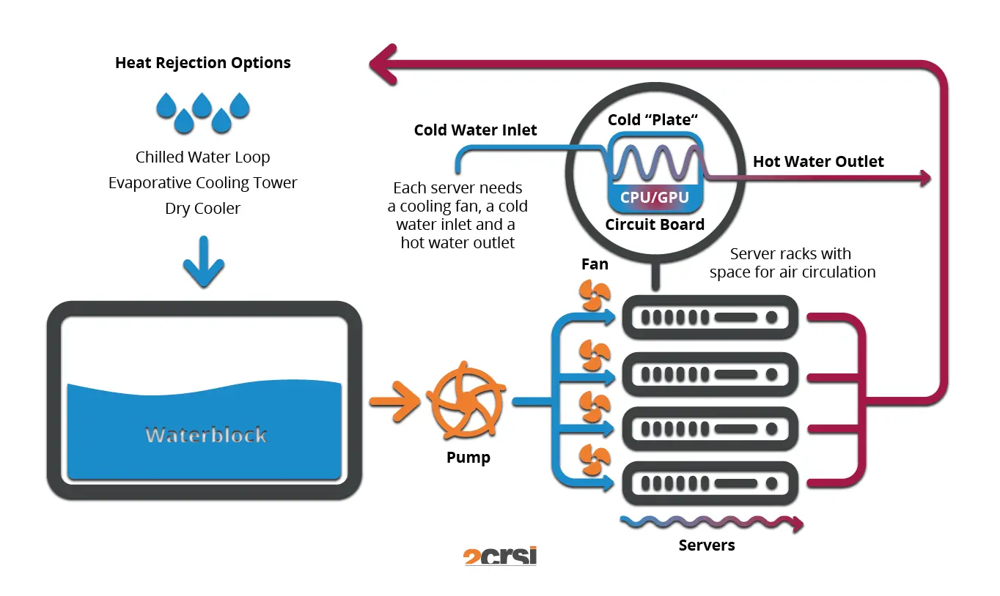

Comment améliorer l'impact environnemental des data centers
- MON
- 2024-2025
- temps 2
- Environnement
- Data center
- Innovation
- Matthieu Dufort
Un MON traitant de l'impact des data centers sur l'environnement et surtout des solutions pour le réduire
Pour ce MON, je vais commencer par détailler l'impact des data centers actuelles pour ensuite étudier les nouvelles solutions technologiques qui sont utilisées ou en cours de développement pour le réduire.
Contenu
Introduction
Le rôle des données est extrémement important au quotiden, autant dans la vie personnelle que professionnelle. Et le monde en compte de plus en plus. D'ici 2025, le nombre de données attendra 175 Zettabytes (175 * 10^12 GB) soit 10 fois plus qu'en 2018. Si nous devions télécharger ça actuellement avec la vitesse d'internet aujourd'hui, cela prendrait 1.8 milliard d'années.

Ces données évoluent et sont stockées dans les data centers qui sont donc ammenés à grossir et évoluer de plus en plus. Ils présentent des enjeux autant stratégiques que politiques et économiques.
Data center
Définition
Un data center est un espace dédié au stockage de machines stockant les données et les applications des entreprises. Ils sont utilisés pour collecter, traiter et stocker les données. Pour cela, ils sont connectés au réseau de façon sécurisée.
Une entreprise peut avoir son propre data center, géré par ses soins. Cependant, il est aussi possible de sous traiter en passant par d'autre entreprise (Amazon, Google, Microsoft ...) qui mettent alors à disposition des serveurs dans leurs centres pour votre utilisation.
Equipements d'un data center
Les data centers comprennent des sysèmes de défenses (Cybersécurité, pare-feux...), des routeurs, des serveurs, des systèmes de stockage et des commutateurs, des systèmes de refroidissement.
Les serveurs sont des ordinateurs ayant une grande puissance et beaucoup de mémoire. Ils sont connectés par les composants réseaux entre eux et avec l'extérieur.
Ces data centers sont sur des sites physiques présentant de fortes restrictions d'accès étant des zones sensibles. Ils ont aussi beaucoup d'équipements d'urgences (incendie, générateur de secours ...) pour permettre de limiter les risques de pannes au maximum. Certaines entreprises dédouble même leurs data centers en faisant des copies identiques afin de garantir le fait que les informations transitant ne puissent être perdues même en cas de panne technique majeur.
Il existe différents niveaux de serveurs définis en fonction de leur capacité informatique, de leur façon de gérer les pannes, de leur temps d'arrêt par an maximum et de la redondance des informations.
On peu observer sur le schéma suivant l'organisation habituelle :

On peut voir les générateurs de secours pour garantir la continuité de l'alimentation, les blocks de climatisation, les racks stockant tous les serveurs, les services de sécurité...
Consommation
Le numérique réprésente aujourd'hui 2.5% des émissions carbone mondiale (selon l'ADEME) et, avec le développement exponentiel de ce dernier, ce chiffre risque de continuer à augmenter. En france, les data centers représentent 14% des émissions liées au numérique.
Ces centres consomment aussi 2% de l'éléctricité mondiale. Et, cette éléctricité est rarement verte. Devant être maintenue à ne température maximal de 20 degrès, ils demandent beaucoup de refroidissement. Pour cela, en plus de l'éléctricité, ils demandent une grande quantité d'eau. On peut prendre comme exemple google qui juste en 2021 a consommé 15 milliard de litre d'eau pour ses data centers.
On peut relever aussi que 77% des centres sont suréquipés et sont donc en surconsommation. L'IA est aussi un facteur agravant car c'est une technologie qui demande énormément de puissance et donc de serveurs et donc d'énergie.
Face à ceci et aux besoins de plus en plus nombreux, il est évident qu'il faut trouver de nouvelles solutions pour réduire l'impact.
Innovations
Changement de serveurs
Remplacer les serveurs classiques par des serveurs virtuels est une méthode permettant aussi de réduire l'impact environnemental. En effet, les serveurs virtuels se mettent en veille lorsqu'ils ne sont pas utilisé alors que les serveurs classiques ne se stop jamais. Aujourd'hui, seul 50% des serveurs sont des serveurs virtuels.
Un moyen efficace de réduire l'impact énergétique peu aussi être de relocaliser son petit serveur dans les grands centres beaucoup plus efficace. On reduit ainsi la perte d'énergie.
Méthode des couloirs froids
Les couloirs froids sont une méthode d'organisation des data centers qui peut être appliquer dans tous les centres sans modifications majeurs. Cette méthode permet de réduire l'énergie nécessaire à la régulation de la température en organisant les flux de chaleur. Cela consiste à créer des couloirs chauds et des couloirs froids alternés. Pour cela, Il faut placer les serveurs dans le même sens pour ne pas mélanger les deux airs et laisser passer le couloir chaud à l'arrière des machines.
Cette solution est instalable dans tous les data centers et nécessite uniquement une réorganisation.
 Salle Blanche, Couloir froid, http://vroomblog.com/1_-salle-blanche-couloir-chaud-froid/, Vroom Blog
Méthode du free cooling
Cette méthode consiste à utiliser les ressources naturelles des pays pour refroidir les salles. On peut penser a placer les centres dans les pays froids par exemple afin d'utiliser l'air natur!elle.
Liée à cette méthode de refroidissement, il existe aussi des centres en pleine air profitant au maximum de l'air extérieur pour refroidir.
 Schema free air Cooling, https://www.akcp.com/blog/data-centers-free-air-cooling/, AKCP
Méthode des bains diélectriques
Cette méthode consiste à plonger les serveurs dans des bains d’huile permet d’absorber la chaleur de ces derniers. Ce système pourrait permettre de réduire la consommation électrique de 80 %. Il est en plus possible d'utiliser de l’huiles de cuisson usagée ou de vidange de véhicules.
Cette méthode fonctionne très bien pour les data centers qui ont beaucoup de puissance de calcul dans de très petit espaces. Il faut cependant aussi ne pas avoir besoin de faire évoluer fréquement ses connections et serveurs car la maintenance est plus compliqué.
On peut citer par exemple la société Neutral It qui utilise cette méthode couplée avec une chaudière de batiment afin de réduire la consommation de la chaudière mais aussi des micro data centers. Ainsi, la chaleur des data centers est redirigé vers l'eau du batiment pour préchauffer avant la chaudière afin d'attendre une température d'environ 45 degrès avant de passer dans la chaudière. Les data centers n'ont alors plus besoin de services de refroidissement autres et la chaudière consomme alors de 30 à 60% moins.
Data center à refroidissement liquide direct
La méthode précédente se décline en une méthode de refroidissement par liquide direct qui consiste à refroidir le processeur directement en faisant circuler de l'eau (ou huile) dessus. Cette méthode permet ensuite de rediriger l'eau chauffé vers un batiment ou de rentrer dans un cycle de refroidissement similaire à une pompe à chaleur inversé. En général ce système se combine avec de la ventilation mais il permet une baisse de 45% de la consommation en énergie.
 Système de refroidissement par liquide direct, 2CRSI
Cette méthode est applicable dans les data centers déjà existant en réalisant quelques réarrangement, mais, elle ne nécessite pas de structure particulière.
Data center à énergie renouvelable
Comme son nom l'indique, cette méthode consiste a faire tourner son data center en utilisant uniquement de l'énergie renouvelable. Pour les entreprises, il est possible de choisir ou héberger ses serveurs et elles peuvent donc s'orienter vers ce type de data center afin de réduire leur impact.
En chine, 23 % de l'énergie utilisé pour alimenter les data center est de l'énergie verte. On peut aussi citer le plus grand data center du monde au Etat-Unis "Citadelle" fonctionne uniquement à l'énergie verte. C'est une solution qui est possible et qui se développe de plus en plus.
Data center à réacteur nucléaire
L'utilisation du nucléaire dans les data centers est quelque chose de déjà utilisé par certains mais, il tend a se développer de plus en plus car chacun des géants du numérique s'est associé à une entreprise afin de développer des mini-réacteurs ou redévelopper des centrales existantes pour alimenter leurs data centers. Google vise par exemple 7 mini-réacteurs d'ici 20235.
Le nucléaire demande un gros coût de départ en investissements mais permet ensuite d'avoir de l'énergie décarbonnée et surtout peu chère. L'énergie nucléaire fait parti des moins chères et peu donc permettre de faire des économies sur le long terme.
Cependant, il reste quelques soucis en terme de régulation par exemple car le nucléaire est reservé aux opérations gouvernementals ou demande un contrôle précis. De plus les data centers sont souvent au contact de la populations afin de garantir un temps de réponse optimale et cela peut donc créer des risques pour les populations.
Data center immergé en mer
Cette innovation a été lancé en phase d'essai en 2013 par microsoft avec le projet Natick en Ecosse. L'immersion des serveurs dans la mer se fait dans un container étanche avec un atmoshpère composé d'azote. Le refroidissement est alors assuré par la température de la mer et les courants marins en profondeur. Etonnament, cette solution est plus fiable (8 fois moins de pertes) qu'un centre équivalent sur terre malgrès les soucis de maintenance potentiels. Cela est du a la stabilité de la température de la mer, l'absence de présence humaine et l'absence d'oxygène dans l'air (corrosif). L'electricité est apportée par des l'exploitation d'énergies renouvelables produite sur terre. Cependant, à terme, le projet devait tirer son éléctricité de l'énergie des vagues ou des courants afin d'être au plus proche des centres et qu'ils soient autonomes.
Ceci présente aussi des avantages stratégiques car l'océan est une surface infini proche des populations. Des centres de cette forme pourrait permettre de passer d'une latence de 40 ms à 2ms en passant de 4000km de distance a 200km de distance en moyenne.
Ce projet a été une réussite après deux ans d'expérience, mais, microsoft a cependant décidé de mettre fin à cette éxpérience pour des raisons économiques et logistiques. A court terme, Microsoft a décidé d'investir plutôt dans des data centers à réacteur nucléaire (ou énergies renouvelables) ainsi que sur un nouveau système de refroidissement à eau en circuit fermé. En effet, l'investissements. Ce projet a bien prouvé sa viabilité mais il est important de noter que peu d'études ont été faites sur l'impact possible sur la biodivesité marine local.
La Chine quand à elle a développé son data center sous marin et a pour objectif d'atteindre une puissance équivalente à 6 millions d'ordinateurs d'ici 2025. Celui ci va permettre d'économiser 122 millions de kwH par an.
Conclusion
Ainsi, on peut osberver que beaucoup de solutions sont à l'épreuve afin de réduire l'emprunte environnemental des data centers. Aussi bien pour réduire la consommation de ressource (eau) que la consommation en énergie. De plus, le développement de nouvelles solutions est un enjeux majeur pour les géants du digital qui doivent réduire leur emprunte carbone. Les investissements dans des nouvelles solutions continuent afin de palier aux besoins croissant et à la nécessité de réduire la consommation.
Bibliographie
- Greenly Earth, Quelle est l'empreinte carbone d'un data center ?
- bpifrance, Pollution des data centers : Comment réduire leur empreinte carbone ?
- Fortinet, Qu’est-ce qu’un Datacenter ?
- IDC, The Digitization of the World
- Carbo, Pollution des data centers : comment la réduire ?
- Cloud Magazine, Datacenter – Immersion cooling : une technologie de refroidissement prometteuse à condition de la maitriser
- 2CRSI, Refroidissement liquide direct
- Numerama, Sous l’eau depuis deux ans, le data center sous-marin de Microsoft a tenu
- [Developpez.com](https://green-it.developpez.com/actu/359579/Microsoft-met-fin-a-l-experience-de-centre-de-donnees-sous-marin-denommee-Project-Natick-malgre-son-succes-des-rapports-suggerent-que-l-approche-de-data center-sous-la-mer-est-couteuse/), Microsoft met fin à l'expérience de centre de données sous-marin dénommée Project Natick, malgré son succès
- Clubic, La Chine déploie son premier data center sous-marin et il est colossal
- ADEME, Chauffer l’eau avec l’énergie d’un data center
- Alliancy, Le nucléaire à la rescousse des datacenters ?